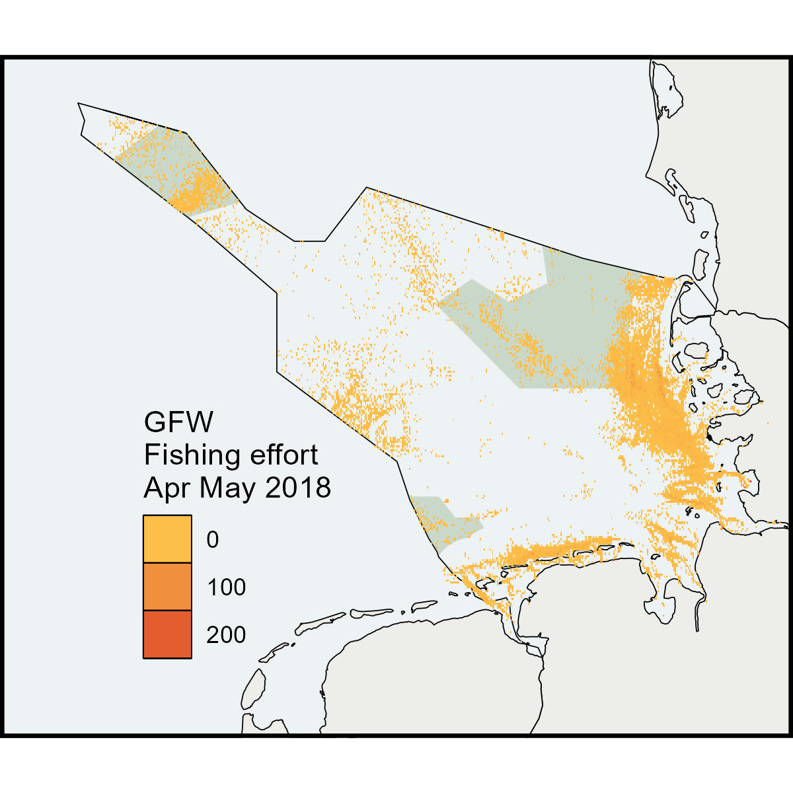

Fishing_tif<-"https://github.com/MiriamLL/data_supporting_webpage/raw/refs/heads/main/Blog/2025/FishingWatch/public-global-fishing-effort-v3.0.tif"Fishing effort
R
ggplot2
English
Y2025
In this blog post, I walk you through the process of visualizing Global Fishing Watch data in R, covering from downloading the dataset to reading it and creating a map using ggplot.
Intro
Global Fishing Watch map is a open-access online tool designed for the visualization and analysis of vessel-based human activity at sea. It allows anyone with an internet connection to access the map and monitor global fishing activity from 2012 to the present. The map tracks more than 65,000 commercial fishing vessels, which are responsible for a significant portion of the global seafood catch.
The data is broadcast through the automatic identification system (AIS) and collected via satellites and terrestrial receivers. This information is then combined with vessel monitoring system data provided by partner countries. A fishing detection algorithm is applied to determine the “apparent fishing effort” based on changes in vessel speed and direction. The heat map grid cell colors indicate the level of fishing activity in each area, allowing for precise comparisons.
Fishing Effort
Global Fishing Watch’s “fishing effort” refers to the measure of human activity related to fishing that is detected and analyzed from data provided by commercial fishing vessels.
Explanatory video from GFW to download data
To download the data, you need to log in using your email.
For a test data we will see the apparent fishing effort (AIC).
Fishing effort data is provided in tif format.
To download test data in tif format click here.
The example data is limited to April and May of 2018.
To read the raster data define the folder, or as here, use the data directly form the repository.
Use the package terra to use the function rast.
library(terra)Fishing_rast<-rast(Fishing_tif)Check that you have properly read the data.
class(Fishing_rast)Plot
Load (or install) package tidyterra to use the function geom_spatraster in ggplot.
library(tidyterra)library(ggplot2)Here is an example of how the raw data looks.
ggplot() +
geom_spatraster(data = Fishing_rast) +
facet_wrap(~lyr, ncol = 2)+
theme_bw()Tif To data frame
To manipulate raster data converting it to data frame facilitates the process.
Fishing_df<- as.data.frame(Fishing_rast, xy = TRUE)head(Fishing_df)Subset
To subset the data use the function filter from the package tidyverse.
library(tidyverse)Define longitude and latitude limits of interest.
Fishing_sub <-Fishing_df %>%
filter(x > 2 & x < 10)%>%
filter(y > 52 & y < 57)%>%
rename(FishingEffort=3) Check briefly the average Fishing Effort for the area.
mean(Fishing_sub$FishingEffort)Plot
Shapefiles of the German North Sea are accessible in my package GermanNorthSea.
install.packages("devtools")
devtools::install_github("MiriamLL/GermanNorthSea")
library(GermanNorthSea)The package sf helps to convert the CRS.
library(sf)To transform to the appropriate CRS, use the function st_transform.
German_land<-st_transform(GermanNorthSea::German_land, 4326)
German_EEZ<-st_transform(GermanNorthSea::German_EEZ, 4326)
German_SCA<-st_transform(GermanNorthSea::German_SCA, 4326)
German_natura<-st_transform(GermanNorthSea::German_natura, 4326)Use ggplot to create your plot. Each dot is a value of fishing effort.
Fishing_plot<-ggplot() +
geom_tile(data = Fishing_sub, aes(x = x, y = y, fill = FishingEffort)) +
theme_bw()+
coord_sf(xlim = c(3,9), ylim = c(53,56),
label_axes = list(top = "E", left = "N", bottom = 'E', right='N'))Change plot style
Fishing_plot<-ggplot() +
geom_tile(data = Fishing_sub, aes(x = x, y = y, fill = FishingEffort)) +
geom_sf(data = German_EEZ, colour = 'black', fill = 'transparent')+
geom_sf(data = German_land, colour = 'black', fill = '#edede9')+
geom_sf(data = German_natura, colour = 'transparent', fill = '#3d6d22',alpha=0.2)+
theme_void()+
xlab('Longitude')+ylab('Latitude')+
coord_sf(xlim = c(3,9), ylim = c(53,56),
label_axes = list(top = "E", left = "N", bottom = 'E', right='N'))+
geom_tile(data = Fishing_sub, aes(x = x, y = y, fill = FishingEffort)) +
theme(legend.background = element_rect(colour = "transparent", fill = "transparent"),
legend.position = c(0.30,0.30),
panel.background = element_rect(fill = '#edf2f4'),
panel.grid.major = element_blank(),
panel.grid.minor = element_blank(),
panel.border = element_rect(colour = "black", fill=NA, size=1.5))+
scale_fill_gradient(low = "#fcbf49", high = "#d62828")+
guides(fill=guide_legend(title="GFW \nFishing effort \nApr May 2018"))
Fishing_plotNotes
This data is part of an exercise using information from the platform, and the details provided have not been verified or checked for accuracy. The figures and patterns observed are based on the data from Global Fishing Watch, but they may not represent the final, validated insights.
No guarantee is made regarding the accuracy or reliability of this data.
Activity data
The fishing effort information includes information on Time Range, Flag, GearType and Apparent Fishing Hours.
To download test data in csv format here or [here]https://github.com/MiriamLL/TestData/tree/main/layer-activity-data-0).
To load, select your folder and file.
Fishing_csv<-"https://github.com/MiriamLL/data_supporting_webpage/raw/refs/heads/main/Blog/2025/FishingWatch/layer-activity-data-0/public-global-fishing-effort-v3.0.csv"Read csv
To read a csv use the function read_csv
Fishing_csv<-read_csv(Fishing_csv)There is no clear way to link this data and the previous map.
Gear Type
For an overview of the GearType. This information may not be conclusive, but it provides a solid overview of the types of gear primarily registered.
Fishing_csv %>%
group_by(Geartype)%>%
tally()%>%
arrange(-n)The vessel registry database is used to identify vessels in the AIS data that have a known vessel class. A convolutional neural network—a cutting-edge form of machine learning model—is then trained to identify other vessels in the AIS data that behave in a similar fashion.
Read more here about vessel identity.


Further read
Global fishing watch: Tracking the global footprint of fisheries
Fisheries in the German North Sea: Mapping fisheries in the German exclusive economic zone with special reference to offshore Natura 2000 sites
Examples of publications using data from Global Fishing Watch:
Seabirds: Ocean sentinel albatrosses locate illegal vessels and provide the first estimate of the extent of nondeclared fishing
Fish: Global collision-risk hotspots of marine traffic and the world’s largest fish, the whale shark
Other resources to download GFW data:
Working with public data
GitHub with outdate instructions
Citation: Global Fishing Watch. 2022, updated daily. Vessel presence and apparent fishing effort v20201001, [Apr 01 2018 00:00 UTC May 31 2018 00:00 UTC]. Data set accessed at https://globalfishingwatch.org/map